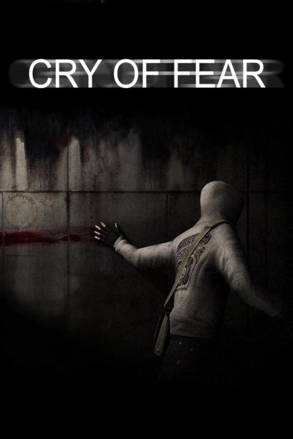

Meus jogos favoritos
Detroit: Become Human

No ano de 2038, a cidade de Detroit tornou-se o centro da produção de androides criados pela empresa CyberLife. Alguns androides começam a apresentar comportamentos anômalos, desenvolvem emoções, desejos e livre-arbítrio. Eles se tornam "desviantes".
Cry of Fear

Cry of Fear é um jogo de terror psicológico sobre Simon, um jovem que ficou paraplégico após ser atropelado. Simon enfrenta monstros que simbolizam seus medos, a rejeição da amiga Sophie e a culpa em relação ao seu psiquiatra.